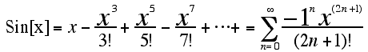
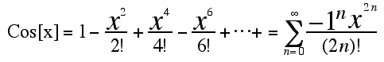
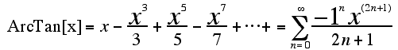
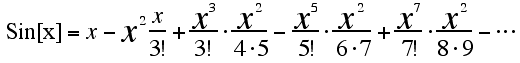

Trigonometry Functions
The majority of the compasses time is spent converting data to a bearing use trig functions. At first I considered using lookup tables. With 16-bit data this would mean 2^16 possible bearings or 65,536 possible headings. I realize I would only need to calculate trig functions for one quadrant but this is still 16,384 bearings. However even with tricks I saw no way to make the lookup table small enough considering my total memory will be between 10-20kb. This means I need to calculate the Sine, Cosine, and ArcTangent functions. I remembered using Taylor series from the old CalcII days. This looked like a promising method to approximate the trig functions. I started by using the Mathematica to derive Taylor series for the three functions I need (remember computers are meant to do the work for you). The Mathematica command looks something like this: Series[Sin[x],{x,0,15}] Mathematica will happily kick out as many terms as desired. I arrived at the following Taylor series:   The above series nicely calculate the trig functions but they are rather "math intensive." Note the number of exponents and factorials- not good. I decided to try factoring the Taylor series to see if I could find any any repetition I could easily exploit. The following factorization of the Sin[x] series shows how each term in the series has the previous term as a factor. This can Significantly cut down on the number of calculations needed to evaluate the series. And finally a short C function that implements the above factorization:
/*
x2=x*x; Gregory's Formula for arctan(t)In 1672, James Gregory (1638-1675) wrote about the Taylor series for calculating the angle given the tangent t for angles up to 45°
The above series converges provided that
-1 < t < 1. Trouble is, the Taylor
series for atan converges very slowly for values of t
near one or tan(45°), and it
converges extremely slowly when t equals one. Not a good method. Above section from: http://www.mcs.surrey.ac.uk/Personal/R.Knott/Fibonacci/fibpi.html#arctan Raymond E. Marcil Last modified: Thu Feb 18 14:41:08 AKST 1999 |